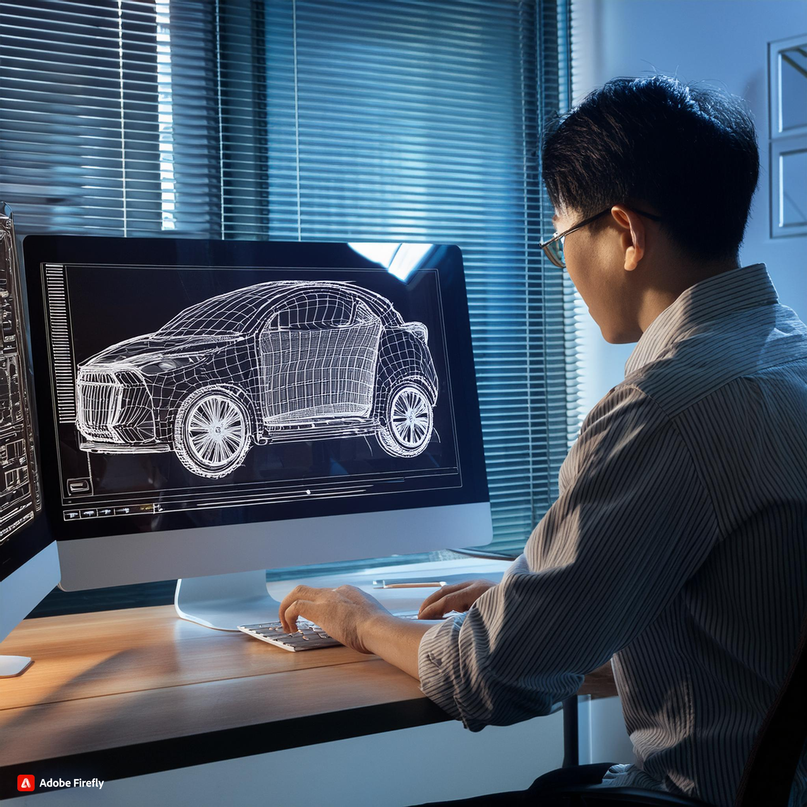

そこで、少しでもイメージを持っていただくためにエネルギー機械コースはこんな人におすすめということを紹介してみたいと思います。
車やバイクや電車などに興味のある方、実際に手を動かして物を作りたい方、地球温暖化や再生可能エネルギーなどに興味のある方、大きなものなどを設計してみたい方などにおすすめです。今あげたものに当てはまらない方でも速く専門的な知識や技能を学びたいという方にもおすすめです。

公大高専では2022年度から新しいカリキュラムであるRカリキュラムに変わりました。
それに伴いコース配属が2年生からとなり、コースの分類もエネルギー機械コース、メカトロニクスコース、電気電子コース、知能情報コースの4つのコースに分類されるようになりました。
ここではその中でもエネルギー機械コースについて紹介していきます。
ぜひ、進学先に公立大高専を考えている中学生の皆さんは参考にしてみてください。
エネルギー機械コース（通称Mコース）では、
・輸送機械や発電所等の産業インフラの設計と運用に必要な技術
・水素エネルギー等のクリーンエネルギーの創生と貯蔵に関する技術
・自然災害の予測分析や対策に関する技術
これらを教育課程の特色とし、人のより良い暮らしと環境との共生を実現する技術者の育成を目指します。
機械設計系では機械工学概論、基礎製図、材料力学、機械工作法、CAD製図、機械設計製図、機械力学、数値計算、機械設計、生産加工工学
計測制御系では電気電子回路、シーケンス制御、制御工学
エネルギー系では熱力学、流体力学、エネルギー変換工学
機械設計系、エネルギー系および計測制御系からなる機械工学とエネルギー工学関連の知識と技術について、
工学的な基礎知識から産業への応用までを視野に入れて体系的・効率的に修得できる講義科目が配置されています。
また、機械エネルギーコースにはこれらの科目を教えてくださる先生方がいらっしゃっており、様々な分野を専門としています。詳しくは以下のURLからご覧ください。
https://www.ct.omu.ac.jp/ene-mecha/teacher/index.html
ここまで機械エネルギーコースについて紹介してきましたがよくイメージがわかないという方もいらっしゃると思います。
そこで、少しでもイメージを持っていただくためにエネルギー機械コースはこんな人におすすめということを紹介してみたいと思います。
車やバイクや電車などに興味のある方、実際に手を動かして物を作りたい方、地球温暖化や再生可能エネルギーなどに興味のある方、大きなものなどを設計してみたい方などにおすすめです。今あげたものに当てはまらない方でも速く専門的な知識や技能を学びたいという方にもおすすめです。
そして、せっかくエネルギー機械コースで専門の知識を付けたのにそれを発揮できる場所が確保されているのか心配になっていませんか？
ですが、安心してください高専の求人倍率は20倍以上であり、自分の力を発揮したい場所で思う存分発揮することが出来ます。また、さらに専門的な知識を増やしたい方も進学するという方法もあるためエネルギー機械コースでの学びは決して無駄にはなりません。
就職先についてはこちらで詳細をご確認ください。

ここまで紹介してきたようにエネルギー機械コースはエネルギーや機械について学び、そしてコース配属後4年間に渡って受験勉強などなく学び続けることが出来るという、専門的に学ぶには最高の環境です。また、そこで学んだものは将来力となり世のなかに貢献することが出来ます。
もし、これまでの紹介で興味を持つ方がいらっしゃいましたらぜひ進学先として、そして入学後のコース配属の選択肢としていかがでしょうか。